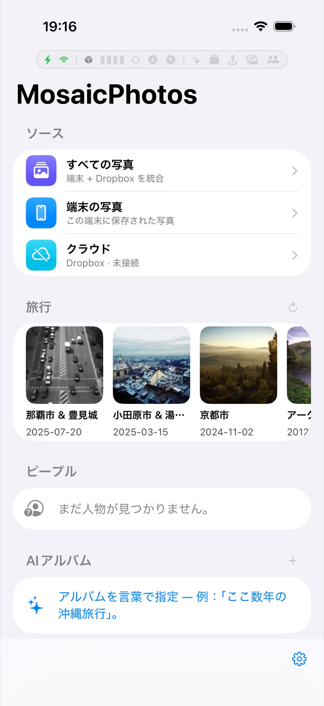

MosaicPhotos ヘルプ
端末内の写真と Dropbox の写真を、ひとつのアプリでまとめて見られる写真ビューワーです。 使い方をトピック別にまとめています。

はじめに・基本の見かた
ホーム画面、All / Photos / Cloud の切り替え、グリッドのズーム・月グループ・全画面表示・写真情報。
AI アルバムと意味検索
言葉でアルバムを作る・写真を探す（オンデバイス AI）。日付や場所などの条件も組み合わせ。
フォルダアルバムの作り方（正規表現ガイド）
Dropbox のフォルダ名から自動でアルバムを作る方法。コピペで使える例をたくさん。
場所アルバム
市区町村ごとの自動グループ表示。端末と Dropbox の写真をまとめて。
Dropbox 連携とバックアップ
接続、同期、端末写真の Dropbox へのバックアップ。
設定（電源・通信・キャッシュ・表示）
バックグラウンド処理、グリッド密度、ストレージ、言語など。
困ったとき（FAQ）
よくある質問とトラブルシューティング。